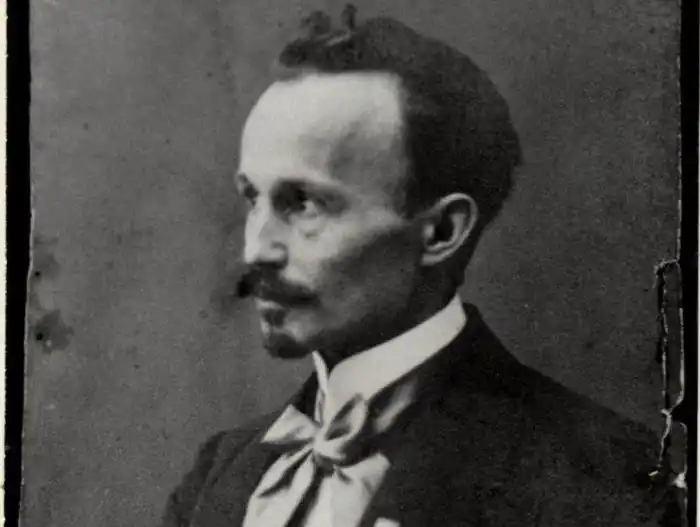
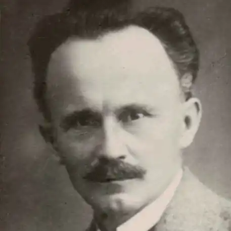
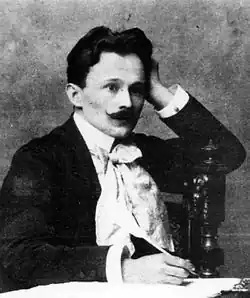

Василь Миколайович Пачовський – український поет, історіософ і мислитель.
Народився поет 12 січня 1878 в Жуличах біля Золочева. Його Батько – сільський священик, патріот і народовець. Мати Марія походила з роду Боярських, в якому теж було багато священиків.
1886 року Василь пішов до школи, а 1889 його віддали до польської гімназії у Золочеві. 1891 року коли помер батько син мусив часто голодувати. Вчителював у гімназіях Львова (1909) та Відня і був одним з організаторів літературної групи "Молода муза". 1915-18 працював у таборах військовополонених українців в Австрії та Німеччині. На заклик "Союзу Визволення України", працював у Перемишлі і Львові. З приходом українців із царської армії, вів там національно-освідомлюючу, освітню й видавничу роботу. 1919 переїхав до Ужгорода де став редактором часопису "Народ". 1920-29 – Василь Пачовський стає професором Ужгородської та Берегівської гімназій, а у 1933 році після поверненя до Галичини, був викладачем Львівського університету. З приходом більшовиків став учителем української мови в середній школі, де вчив ще до війни. Брав участь у засіданнях Організаційного комітету письменників Львова у Клубі письменників. 1940 року йому запропонували викладати українську мову у Львівському університеті. Помер поет у Львові навесні 1942 року від застуди. Василь Миколайович Пачовський 40 років невтомно працював для літератури і створив близько 30 творів, а всі його писання налічують півсотні назв але більшість так і не було видано. Належав до "Молодої Музи", гуртка українсько-галицьких поетів, які наслідували західноєвропейський модерністський напрям у літературі, її органом було видавництво "Світ", що діяло в 1906-1909 роках.